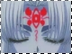

As a Dreamgazer, Princess Hinoto has never been wrong in her predictions of the future. She sees the future in her dreams, and she's been having strong visions of the Seven Seals gathering in Tokyo, and sensing Kamui's presense in Tokyo as well. By being able to predict the future, she goes through intense pain and suffering. She forsaw Kotori's death and cried out for Kamui to stop from choosing a future. Once Kamui choose the side he's going to reside with, Kotori shall be killed. The other Kamui will be awakened as well, to fill the void.
As a Dreamgazer, Princess Hinoto has never been wrong in her predictions of the future. She sees the future in her dreams, and she's been having strong visions of the Seven Seals gathering in Tokyo, and sensing Kamui's presense in Tokyo as well. By being able to predict the future, she goes through intense pain and suffering. She forsaw Kotori's death and cried out for Kamui to stop from choosing a future. Once Kamui choose the side he's going to reside with, Kotori shall be killed. The other Kamui will be awakened as well, to fill the void. When Hinoto uses her spells, the normally pale symbol on her head glows red and appears in midair of the location where her spells are directed at. The symbol appeared above Kamui's high school, since Hinoto wanted to see Kamui's face, to make sure he was the one who can change the future. But Kamui sensed her presence and reflected her spell. She desperately wants Kamui to become one of the Seven Seals so that he might change the future of the world. What she saw in her dreams were the end of the world, and two Kamui fighting each other. She did not understand the meaning of that dream, nor the reason why there could be two Holy Swords. Later she finds out from Kanoe, her younger sister that Kamui has a twin star, and they will use the two Holy Swords to fight the Battle of Apocalypse that will determine the fate of the world.
 Although Hinoto can see the future, she cannot alter the future. This is what pains her the most. There's also the fact that she must endure the pain by herself. Since Kotori's destiny is to die, no matter what anyone did would not save her. Therefore, Hinoto did not warn Kamui of her visions, otherwise Kamui would grief more than he did. As Dreamgazers, she and the other yume-mi can only watch as the future unfolds and repeats itself as it happened in their dreams. Kakyou, the yume-mi of the Dragons of Earth, often comes to visit Hinoto in her dreams to tell her that no matter how much she hoped and wished, there can only be one future. The future that they see in their dreams, the destruction of the world.
Although Hinoto can see the future, she cannot alter the future. This is what pains her the most. There's also the fact that she must endure the pain by herself. Since Kotori's destiny is to die, no matter what anyone did would not save her. Therefore, Hinoto did not warn Kamui of her visions, otherwise Kamui would grief more than he did. As Dreamgazers, she and the other yume-mi can only watch as the future unfolds and repeats itself as it happened in their dreams. Kakyou, the yume-mi of the Dragons of Earth, often comes to visit Hinoto in her dreams to tell her that no matter how much she hoped and wished, there can only be one future. The future that they see in their dreams, the destruction of the world.x clear x